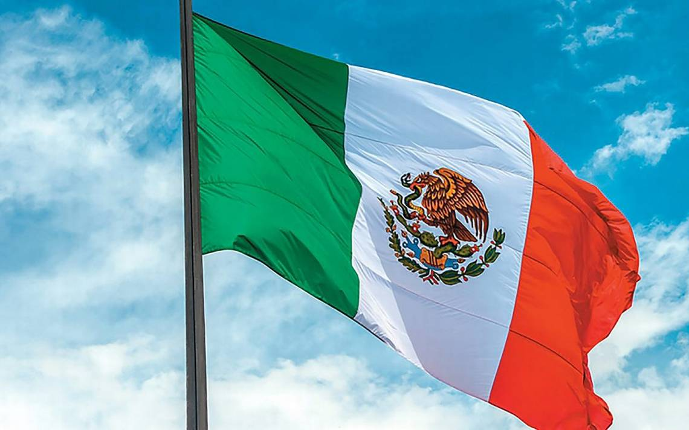

BIENVENIDOS A LAS 5 RECETAS DE LA COMIDA MEXICANA
EN ESTA PAGINA ENCONTRARAS LAS 5 MEJORES RECETAS MEXICANAS
1: receta de pozole rojo
2: receta de chicharron en chile verde
3: receta de pozole verde
4: receta de chile en nogada
5: receta de tamales
receta